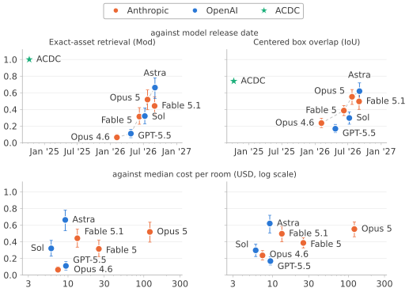

We first wrote about using a generic code agent, Claude Code, for robotics tasks without demonstrations in Frontier Agent as Embodied Agent (FAEA) (accepted at IROS 2026). In the months after we submitted FAEA to arXiv in January 2026, researchers at NVIDIA and groups led by Fei-Fei Li and Ken Goldberg released more comprehensive studies of code agents for embodied tasks. We refer you to our papers and that wider work for technical details. This blog shares our story, perspective, and latest lessons from using code agents for robotics.
How we started
Our weekends have an Amdahl’s law problem: no matter how efficiently we finish everything else, the laundry still needs folding.
The original motivation was simple and naive: seeing Physical Intelligence’s demo of folding laundry, our most hated task, and learning that a $200 SO-101 arm existed, it was hard not to think about robots. So one day, I (Brian) called up Alan, my roommate and friend from college. “$200 and no more laundry folding.” He quickly 3D-printed the SO-101 arm and plugged in the motors. Just when we thought we were about to kiss laundry folding goodbye forever, we realized that 20 episodes of demonstrations bought us the ability to move one particular sock in a rigid setup. The VLA’s performance shifted with the lighting and desk clutter.
With limited time (we all have day jobs), a limited number of robot and human arms, and no GPU cluster, spending months collecting demonstrations for large-scale fine-tuning wasn’t palatable for us.
What puzzled us
We were as much discouraged as encouraged by this dilemma. Though neither of us works in robotics professionally, we sensed disconnects between the current paradigm of VLA scaling and some things we knew from outside robotics, which inspired us to try code agents for robotics:
- Humans can imagine movements and learn them through practice. It’s like a coach teaching someone a sport: once a movement becomes second nature, you don’t need to talk yourself through every move. That is the analogy we mean by a big brain teaching a small visuomotor brain.
- Complex language was never a foundation for visuomotor behavior across the wider animal kingdom. Animals can move and adapt without human-like language, with much smaller brains. The fruit fly brain has roughly 140,000 neurons, yet supports complex behaviors like flight. A battery-powered robot has limited room for the power, cooling, memory, and weight needed by larger models. We cannot assume it will accommodate continued VLM scaling. Cloud offloading is only an option where the connection and latency allow it.
- Human civilization was defined by tools. So why expect a robot to use the same two-finger gripper for every task? Even a foundation model trained across many grippers must adapt to new tools.
Claude Code as embodied agent
That constant puzzling feeling, combined with our limited willingness to spend weekends teleoperating socks, made us wonder whether Claude Code could natively generate motion trajectories. It was the closest thing we knew to the big brain, and we already had subscriptions.
In hindsight, the idea of using Claude Code for embodied tasks was fairly straightforward. One of the evaluations in ReAct (published in 2022) was about LLM-agent reasoning and acting in an embodied environment (though heavily simplified). In 2025, stories were emerging left and right about people using Claude Code for all kinds of tasks, so we conjectured that Claude Code could behave like a generic agent. Frontier models’ vision and embodied reasoning performance was improving rapidly. Code has long been a general way to express and solve computational problems since the Turing machine. Together, these observations suggested that a code agent could handle embodied tasks.
The biggest mental barrier was burning an unknown amount of our limited tokens for weeks. We first explored the idea with Claude Code, borrowing the AI co-scientist paper’s literature-search and hypothesis-debate approach. It ranked the idea above the alternatives it considered. So we decided, why not? And voilà, in less than 20 minutes, with a single prompt, Claude Code was doing pick-and-place inside LIBERO, with no demonstrations whatsoever, and could run its own trials and revise the code until success.
The evaluation used privileged state, including object positions, and an unmodified Claude Agent SDK. This tested control-strategy discovery separately from perception. The paper reports 84.9% success on LIBERO, 85.7% on ManiSkill3, and 96% on MetaWorld—competitive with published demonstration-trained baselines (including VLAs), though the evaluation protocols differ. It’s an apples-to-oranges comparison, but the apples were big enough to make us think it was worth publishing. Hence the FAEA paper, with its embarrassingly simple methodology: prompt the agent to accomplish each task through the allowed robot controls, without directly changing the simulation state.
Scene reconstruction
In less than a year, native code agents have progressed to reconstructing simulation-ready 3D scenes from photographs with a single prompt, approaching aspects of custom-tailored pipelines. Our FASC preprint shows that exact-asset retrieval rose from 6.4% with Opus 4.6 to 66.2% with GPT-6 Astra, roughly a 10X improvement. Astra reduced median placement error to around 14 cm—much closer to the 6 cm reported for ACDC’s curated pipeline. The prompt needed to create a complex 3D room in Isaac Sim was astoundingly simple.
{kind=link}


The code agent can also generate motion trajectories for the robot to perform tasks in the reconstructed scene.
The code agent can also create a custom robot from a single text prompt.
We trained ACT on demonstrations generated by Codex with GPT-6. The agent first wrote a baseline script for suction-based pick-and-place, then adapted it to individual targets where the baseline failed.
This apple-harvesting pilot used 100 successful training demonstrations and 20 held-out validation demonstrations.
A code agent can regenerate demonstrations adapted to a new sensing modality, without requiring another round of human teleoperation.
| Sensing | Policy | Seen success rate | Unseen success rate |
|---|---|---|---|
| Without tactile rim | ACT | 70% | 62.5% |
| With tactile rim | ACT | 95% | 90% |
| SmolVLA | 40% | 60% | |
| π0.5 | 5% | 5% | |
| Octo | 0% | 0% | |
| GR00T N1.7 | 0% | 0% |
Larger implications
An everyday code agent that keeps improving across robotics tasks has broad implications despite the simplicity of the methodology:
- It makes robotics more accessible: people like you and me can build a robot and scale demonstrations in simulation that yield meaningful performance. Relying solely on frontier VLA scaling limits that accessibility: the latest models, such as Gemini Robotics 2 and pi0.7, remain proprietary. Some tasks will still require tight vision-language-action modeling and substantial training resources. For recurring tasks in a particular setting, one can use a smaller model like ACT and train it on code-agent-generated demonstrations in simulation with energy-efficient edge deployment.
- Many capabilities are already built in. New plugins and MCP tools keep appearing in existing harnesses like Claude Code and Codex. If your aunt emails about a visit and you need the robot to clean, the communication channel already exists as another MCP tool. We don’t need to invent another one.
Papers
Our papers: FAEA · FASC. The FAEA code is available on GitHub.